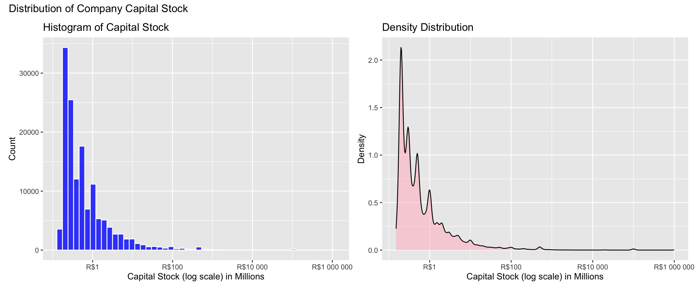
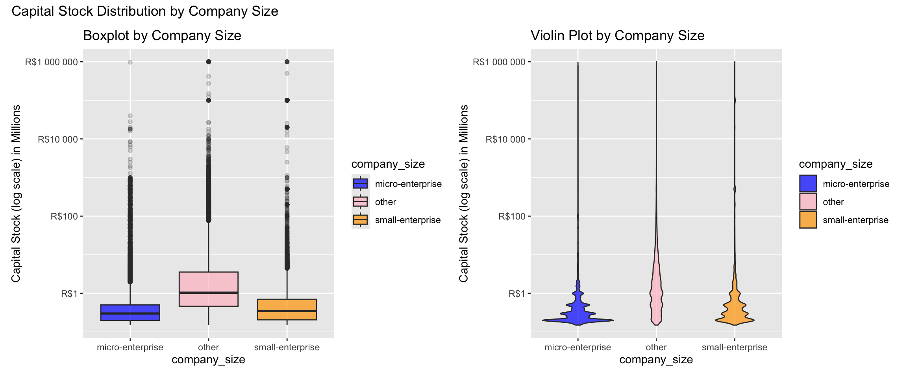
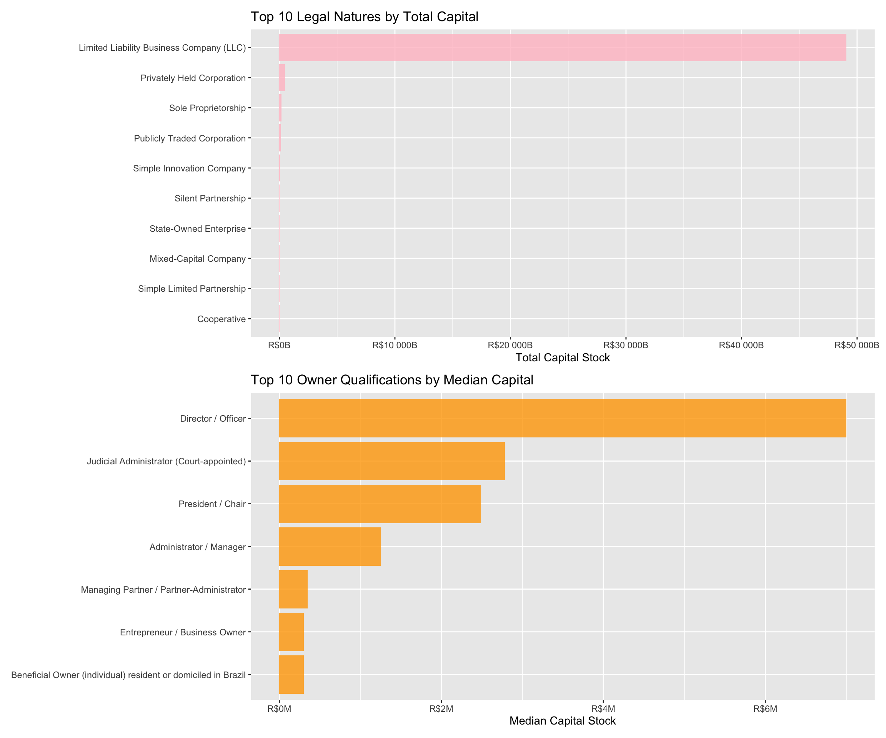
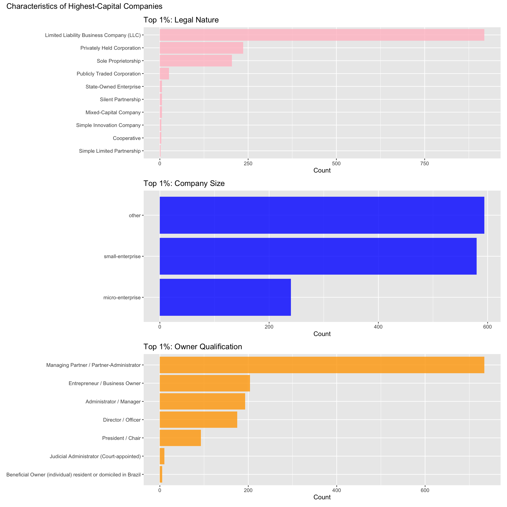
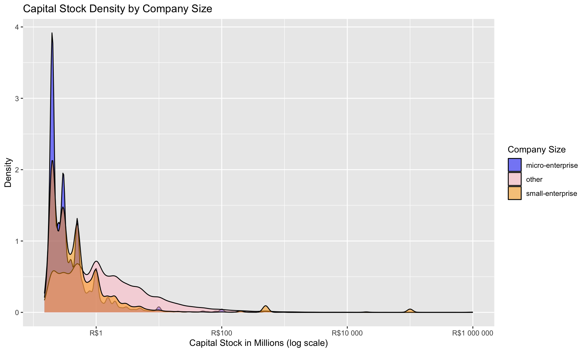
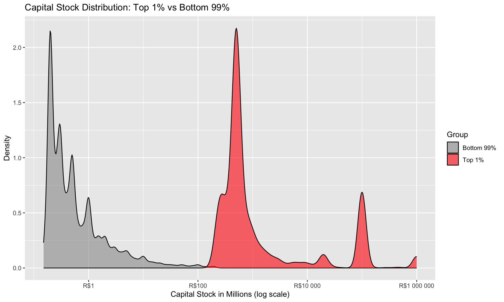
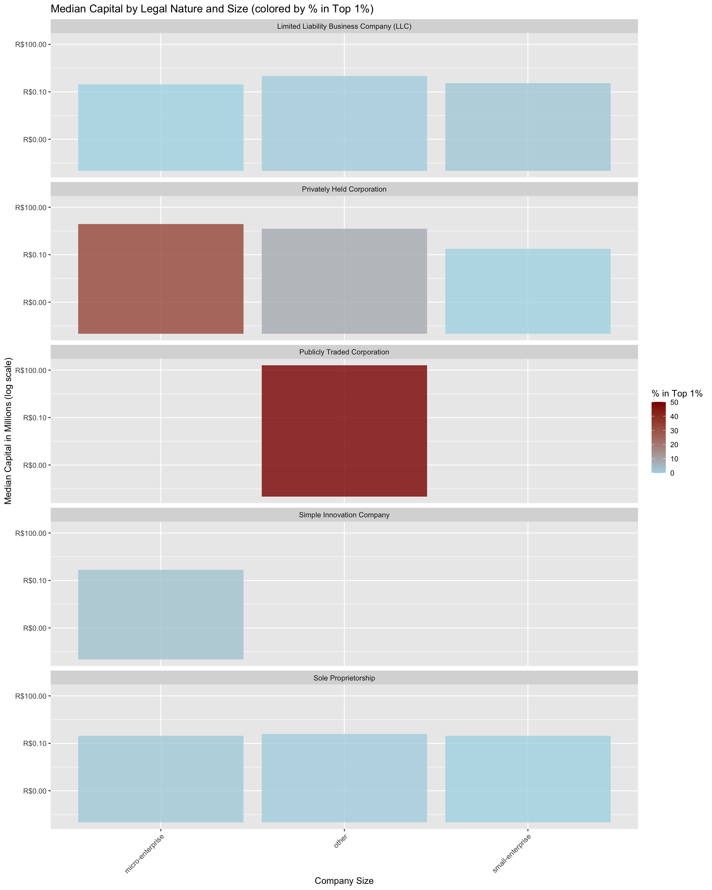

Brazilian Companies Capital Stock Analysis
This week’s TidyTuesday explores Brazilian companies from the CNPJ (Cadastro Nacional da Pessoa Jurídica) registry. I investigate how capital stock varies across different company characteristics including legal nature, company size, and owner qualifications.
Setup
Load Data
Data Exploration
Rows: 141,332
Columns: 6
$ company_id <dbl> 41273639, 41274138, 41274505, 41274745, 41274856, …
$ company_name <chr> "MH MATERIAIS DE CONSTRUCAO LTDA", "CLINICA ESTETI…
$ legal_nature <chr> "Limited Liability Business Company (LLC)", "Limit…
$ owner_qualification <chr> "Managing Partner / Partner-Administrator", "Manag…
$ capital_stock <dbl> 1000000, 200000, 500000, 159600, 200000, 300000, 1…
$ company_size <chr> "small-enterprise", "micro-enterprise", "small-ent… Min. 1st Qu. Median Mean 3rd Qu. Max.
1.500e+05 2.100e+05 4.000e+05 3.537e+08 1.000e+06 1.000e+12 Distribution Analysis
Capital Stock Distribution
Code
(ggplot(data = companies_filtered, aes(x = capital_stock)) +
geom_histogram(bins = 50, fill = my_colors[1], alpha = 0.8, color = "white") +
scale_x_log10(labels = label_number(scale = 1e-6, prefix = "R$")) +
labs(title = "Histogram of Capital Stock",
x = "Capital Stock (log scale) in Millions",
y = "Count")) +
(ggplot(data = companies_filtered, aes(x = capital_stock)) +
geom_density(fill = my_colors[2], alpha = 0.6) +
scale_x_log10(labels = label_number(scale = 1e-6, prefix = "R$")) +
labs(title = "Density Distribution",
x = "Capital Stock (log scale) in Millions",
y = "Density")) +
plot_annotation(
title = "Distribution of Company Capital Stock"
)
The distribution is highly right-skewed, with most companies having modest capital stock and a long tail of high-capital firms.
Capital Stock by Company Size
Code
(ggplot(data = companies_filtered, aes(x = company_size, y = capital_stock, fill = company_size)) +
geom_boxplot(alpha = 0.7, outlier.alpha = 0.2) +
scale_y_log10(labels = label_number(scale = 1e-6, prefix = "R$")) +
scale_fill_manual(values = my_colors) +
labs(title = "Boxplot by Company Size",
y = "Capital Stock (log scale) in Millions")) +
(ggplot(data = companies_filtered, aes(x = company_size, y = capital_stock, fill = company_size)) +
geom_violin(alpha = 0.7) +
scale_y_log10(labels = label_number(scale = 1e-6, prefix = "R$")) +
scale_fill_manual(values = my_colors) +
labs(title = "Violin Plot by Company Size",
y = "Capital Stock (log scale) in Millions")) +
plot_annotation(
title = "Capital Stock Distribution by Company Size"
)
Legal Nature and Owner Qualifications
Code
# Data Wrangling
top_legal <- companies_filtered %>%
filter(!is.na(legal_nature)) %>%
group_by(legal_nature) %>%
summarise(
count = n(),
total_capital = sum(capital_stock),
median_capital = median(capital_stock)
) %>%
arrange(desc(total_capital)) %>%
slice_head(n = 10)
top_qualifications <- companies_filtered %>%
filter(!is.na(owner_qualification)) %>%
group_by(owner_qualification) %>%
summarise(
count = n(),
total_capital = sum(capital_stock),
median_capital = median(capital_stock)
) %>%
filter(count >= 100) %>%
arrange(desc(median_capital)) %>%
slice_head(n = 10)Code
(ggplot(data = top_legal, aes(x = total_capital, y = reorder(legal_nature, total_capital))) +
geom_col(fill = my_colors[1], alpha = 0.8) +
scale_x_continuous(labels = label_number(scale = 1e-9, , prefix = "R$")) +
labs(title = "Top 10 Legal Natures by Total Capital",
x = "Total Capital Stock in Billions",
y = NULL)) /
(ggplot(data = top_qualifications, aes(x = median_capital, y = reorder(owner_qualification, median_capital))) +
geom_col(fill = my_colors[3], alpha = 0.8) +
scale_x_continuous(labels = label_number(scale = 1e-6, prefix = "R$")) +
labs(title = "Top 10 Owner Qualifications by Median Capital",
x = "Median Capital Stock in Millions",
y = NULL))
Top 1% Analysis
Characteristics of Top 1% Companies
Code
(ggplot(data = top1_legal, aes(x = n, y = reorder(legal_nature, n))) +
geom_col(fill = my_colors[2], alpha = 0.8) +
labs(title = "Top 1%: Legal Nature",
x = "Count",
y = NULL)) /
(ggplot(data = top1_size, aes(x = n, y = reorder(company_size, n))) +
geom_col(fill = my_colors[1], alpha = 0.8) +
labs(title = "Top 1%: Company Size",
x = "Count",
y = NULL)) /
(ggplot(data = top1_qual, aes(x = n, y = reorder(owner_qualification, n))) +
geom_col(fill = my_colors[3], alpha = 0.8) +
labs(title = "Top 1%: Owner Qualification",
x = "Count",
y = NULL)) +
plot_annotation(
title = "Characteristics of Highest-Capital Companies"
)
Comparative Analysis
Code
ggplot(data=companies_filtered, aes(x = capital_stock, fill = company_size)) +
geom_density(alpha = 0.5) +
scale_x_log10(labels = label_number(scale = 1e-6, prefix = "R$")) +
scale_fill_manual(values = my_colors) +
labs(title = "Capital Stock Density by Company Size",
x = "Capital Stock in Millions (log scale)",
y = "Density",
fill = "Company Size") 
Key Insights
Top 1% VS Median Companies
Density Comparison
Code
# Density comparison
ggplot(data = companies_comparison, aes(x = capital_stock, fill = top1_status)) +
geom_density(alpha = 0.6) +
scale_x_log10(labels = label_number(scale = 1e-6, prefix = "R$")) +
scale_fill_manual(values = c("Bottom 99%" = "gray60", "Top 1%" = "red")) +
labs(title = "Capital Stock Distribution: Top 1% vs Bottom 99%",
x = "Capital Stock in Millions (log scale)",
y = "Density",
fill = "Group")
Top 1% VS Median Companies’ Capital by Legal Nature and Size
Code
top_legal_names <- top_legal$legal_nature[1:5]
legal_size_summary <- companies_comparison %>%
filter(legal_nature %in% top_legal_names) %>%
group_by(legal_nature, company_size) %>%
summarise(
median_capital = median(capital_stock),
pct_top1 = mean(top1_status == "Top 1%") * 100
)
ggplot(data = legal_size_summary, aes(x = company_size, y = median_capital, fill = pct_top1)) +
geom_col(alpha = 0.8) +
facet_wrap(~ legal_nature, ncol = 1) +
scale_y_log10(labels = label_number(scale = 1e-6, prefix = "R$")) +
scale_fill_gradient(low = "lightblue", high = "darkred") +
labs(title = "Median Capital by Legal Nature and Size (colored by % in Top 1%)",
x = "Company Size",
y = "Median Capital in Millions (log scale)",
fill = "% in Top 1%") +
theme(axis.text.x = element_text(angle = 45, hjust = 1, vjust = 1))
Summary:
The top 1% of companies hold 99.23% of total capital
This extreme inequality means the bottom 99% of companies share less than 1% of total capital
The “other” size category have mostly highest capital levels
Limited Liability Business Companies dominate both by count and capital
Director/Officer qualifications tend to have higher median capital stock
References
1. Combining Plots with Patchwork
- Tutorial: https://patchwork.data-imaginist.com/articles/guides/assembly.html
- Used for: Combining plots with + (side by side) and / (stacked vertically)
2. Data Wrangling with dplyr
- I looked into this book for understanding: all common verbs and count(sort = TRUE) which I did not know prior : https://r4ds.hadley.nz/data-transform
- Stack Overflow helped me understand reordering factors: https://stackoverflow.com/questions/5208679/order-bars-in-ggplot2-bar-graph
- Used all these for sorting data, selecting top N rows, and reordering bars with reorder()
3. ggplot2 Scales and Aesthetics
- Scale functions: https://ggplot2.tidyverse.org/reference/scale_continuous.html
- Manual scales: https://ggplot2.tidyverse.org/reference/scale_manual.html
- Labels for prefixes since we are using Brazilian currency and logs: https://scales.r-lib.org/reference/label_number.html
- Stack Overflow helped me look at different ways to use log transformations just for reference but I ended up using the scale_x_log10: https://stackoverflow.com/questions/14255533/how-to-put-a-ggplot2-plot-on-log-scale.
- Used for dealing with colors to differentiate plots easier for viewers, dealing with money visualizations since many businesses capitals do not have linear relationships I used a log transformation to better visualize trends. Also used for scale_x_log10(), scale_fill_manual(values = my_colors), custom colors